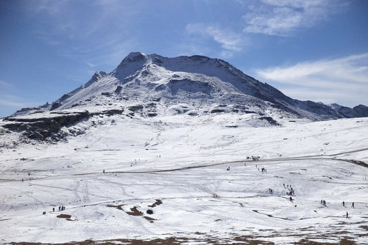

MANALI
Manali is a high-altitude Himalayan resort town in India’s northern Himachal Pradesh state. It has a reputation as a backpacking center and honeymoon destination. Set on the Beas River, it’s a gateway for skiing in the Solang Valley and trekking in Parvati Valley. It's also a jumping-off point for paragliding, rafting and mountaineering in the Pir Panjal mountains, home to 4,000m-high Rohtang Pass.
SHIMLA
Shimla is the capital of the northern Indian state of Himachal Pradesh, in the Himalayan foothills. Once the summer capital of British India, it remains the terminus of the narrow-gauge Kalka-Shimla Railway, completed in 1903. It’s also known for the handicraft shops that line The Mall, a pedestrian avenue, as well as the Lakkar Bazaar, a market specializing in wooden toys and crafts.
JAMMU AND KASHMIR
Jammu and Kashmir is a region administered by India as a union territory and consists of the southern portion of the larger Kashmir region, which has been the subject of a dispute between India and Pakistan since 1947 and between India and China since 1959.
Culture of Jammu and Kashmir is a comprehensive mingling of customs and practices of its two distinct regions, Kashmir and Jammu.
NAINITAL
Nainital is a Himalayan resort town in the Kumaon region of India’s Uttarakhand state, at an elevation of roughly 2,000m. Formerly a British hill station, it’s set around Nainital Lake, a popular boating site with Naina Devi Hindu Temple on its north shore. A cable car runs to Snow View observation point (at 2,270m), with vistas over the town and mountains including Nanda Devi, Uttarakhand’s highest peak.
MUSSOORIE
Located 34 km from Dehradun, Mussoorie is a picturesque and one of the most famous hill stations in India that promises a pleasant climate and abundant natural beauty. The town is surrounded by Shivalik Ranges and Doon Valley and is also one of the most beautiful places to visit in India.
LADAKH

Known for dramatic landscapes, meandering rivers, Buddhist monasteries, cosy cafes and tons of adventure activities, Leh-Ladakh is one of the most unique and amazing places in India. It is one of the highest hill station in India as it lies at an altitude of 3500 m and is famous for featuring the highest motorable road in the world.
DARJEELING
A prized jewel in the Himalayan Range, Darjeeling is the perfect getaway for nature lovers and honeymooners. Offering stunning views of the world’s third-highest peak – Kanchenjunga, Darjeeling is a favourite among summer travellers and is among the most famous hilly areas in India.
MAHABALESHWAR
Surrounded by the Western Ghats and dotted with dense forests, strawberry farms, rivers and waterfalls, Mahabaleshwar is a wonderful place for a rejuvenating vacation. This hill station is located at an elevation of 1353 m and has many amazing trekking and hiking trails if you are up for it.
Follow us on social media